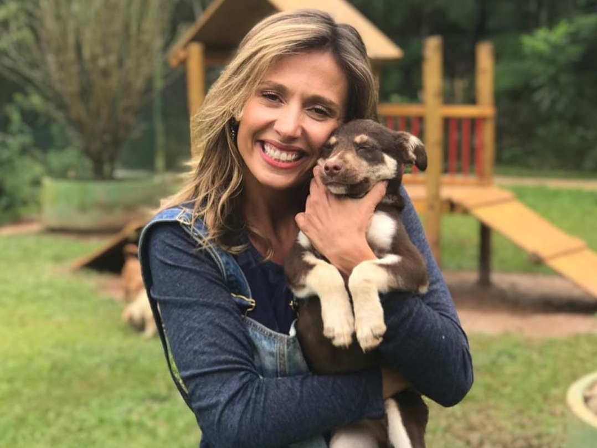
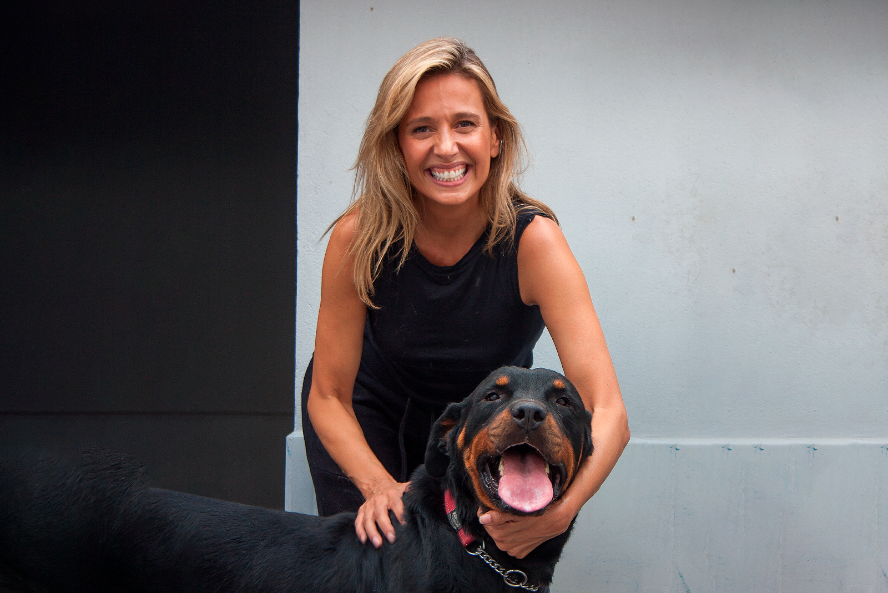
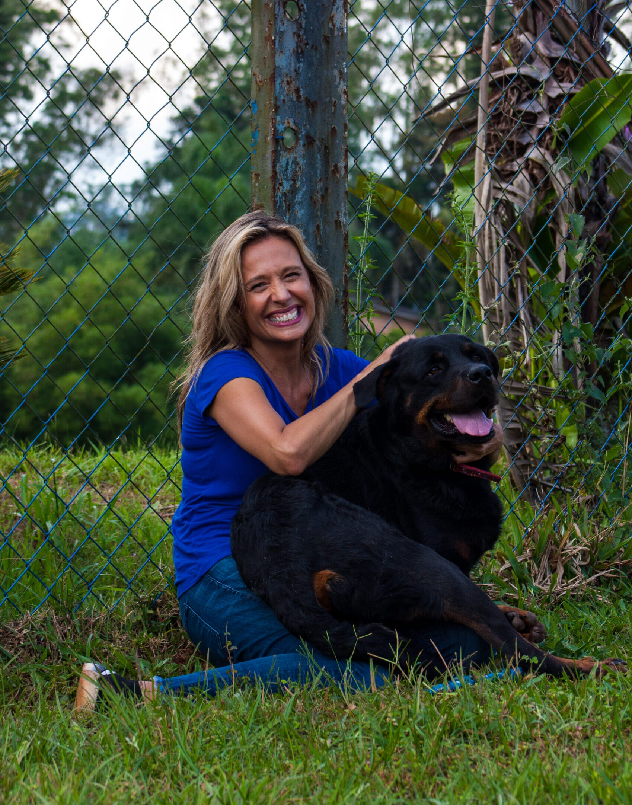
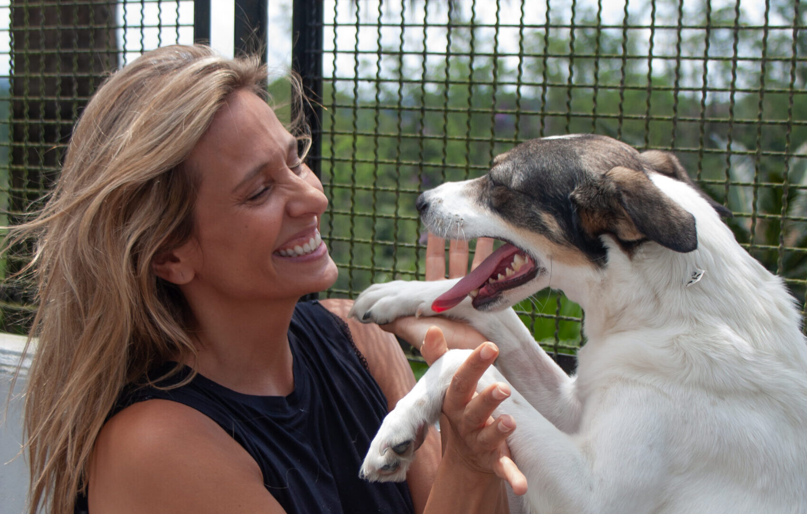
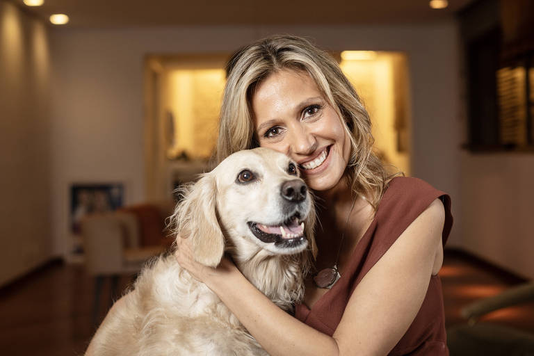
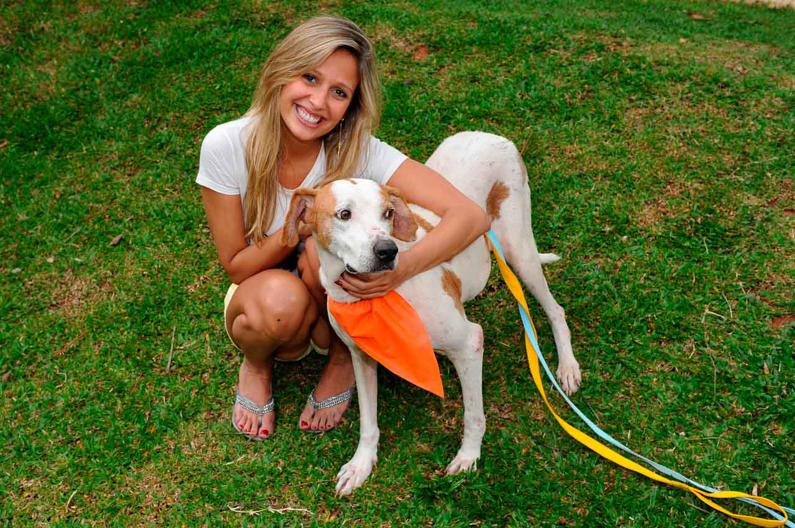
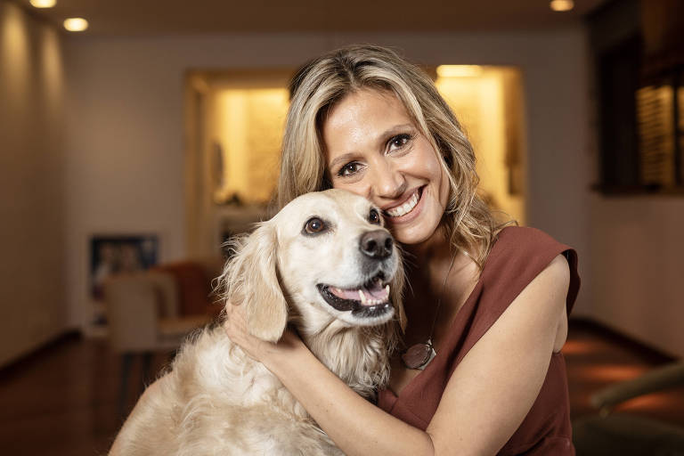
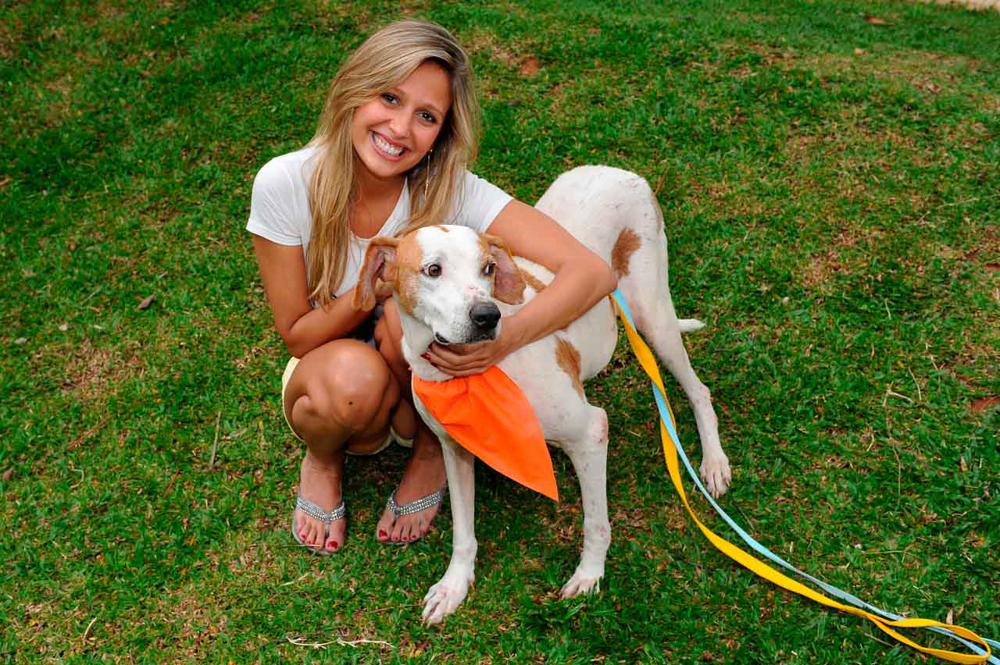

Juntos Salvamos Vidas
Bem-vindos
No Instituto Luisa Mell, acreditamos que toda vida importa. Desde 2015, nossa missão é resgatar, cuidar e transformar a realidade de animais vítimas de abandono, maus-tratos e situações de risco. Com uma equipe apaixonada e voluntária, oferecemos atendimento veterinário, reabilitação e, principalmente, uma nova chance para centenas de cães, gatos e outros animais encontrarem um lar cheio de amor.
Junte-se a nós nessa causa! Doe, adote, seja voluntário e faça parte dessa corrente do bem. O futuro dos animais depende do nosso compromisso e do seu apoio.
Doe aqui



 



Instituto Luisa Mell é uma organização não governamental
Fundado em 2015 pela ativista e apresentadora Luisa Mell, o instituto tem como missão promover a defesa dos direitos dos animais, combater maus-tratos e conscientizar a sociedade sobre a importância do respeito e da compaixão para com todas as espécies.
+500 animais resgatados em 2024
Com um time incansável de voluntários, veterinários e apoiadores, o instituto alcançou a incrível marca de mais de 500 animais resgatados em apenas alguns meses.
+300 animais adotados em 2024
Dos mais de 300 animais adotados, a maioria são cães e gatos resgatados de situações de abandono, maus-tratos ou risco.
Resgates Marcantes
Cada resgate é uma história de superação, esperança e amor. No Instituto Luisa Mell, já salvamos milhares de animais de situações extremas
CNN Brasil
09/05/2024
Luísa Mell relata desafios no resgate de animais durante enchentes no RS
Mais de 1,5 mil animais foram salvos durante as enchentes. Operação de 7 horas resgatou égua em situação crítica.
Ler matéria completa →
G1
14/05/2024
Luisa Mell quebra duas costelas em resgate de animais no Rio Grande do Sul
"Dor insuportável": mesmo ferida, ativista continuou os trabalhos de resgate até que os remédios não fizeram mais efeito.
Ler matéria completa →
G1
29/09/2017
ONG de Luisa Mell resgata 135 cães de maus-tratos em canil de Osasco
Animais estavam sem banho, com fezes grudadas. 9 filhotes mortos foram encontrados no lixo do local.
Ler matéria completa →
G1
08/11/2022
Justiça condena dona de canil por maus-tratos contra mais de 1.700 cachorros
Canil Céu Azul em Piedade funcionava de forma clandestina. Animais viviam em condições precárias e sem veterinário.
Ler matéria completa →Como transformamos vidas
Nossos Parceiros